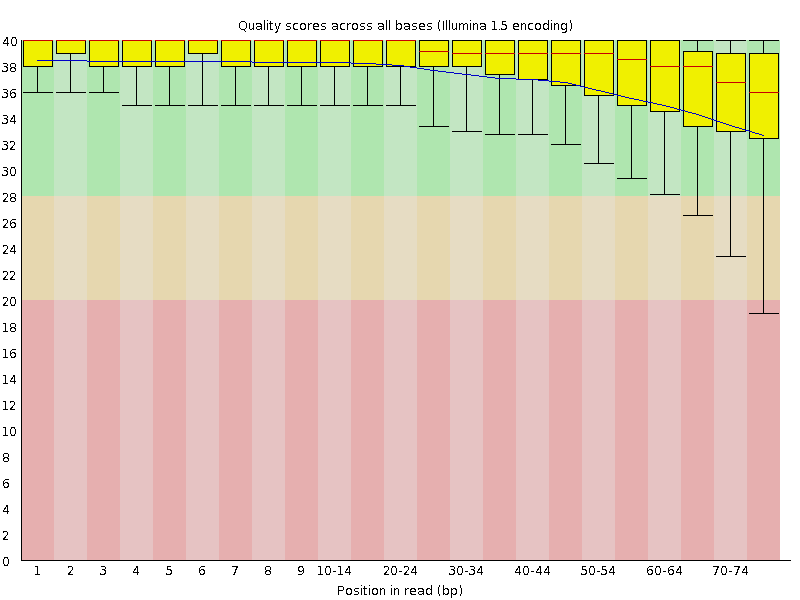
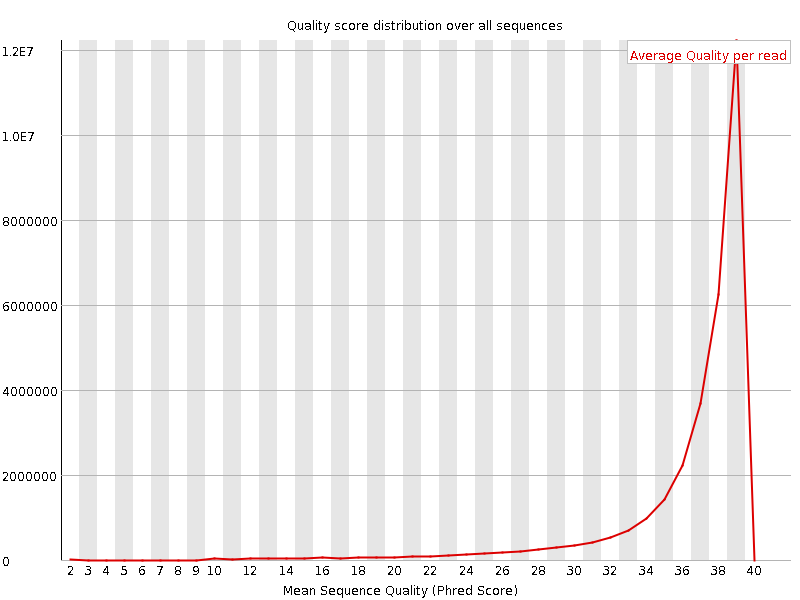
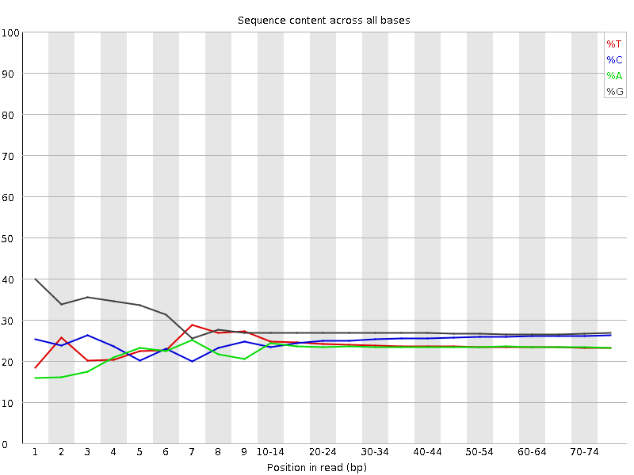
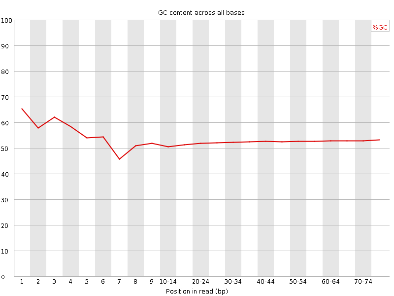
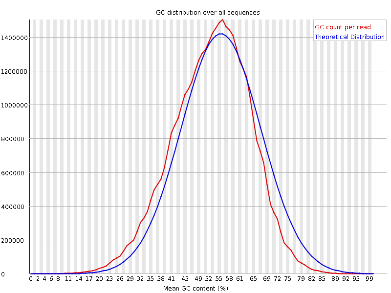
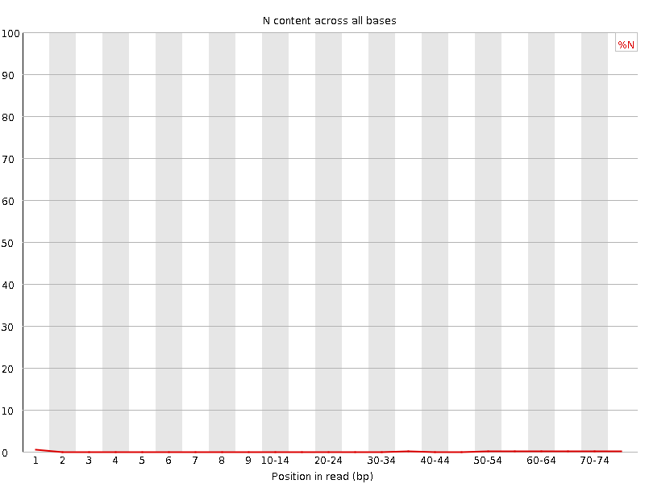
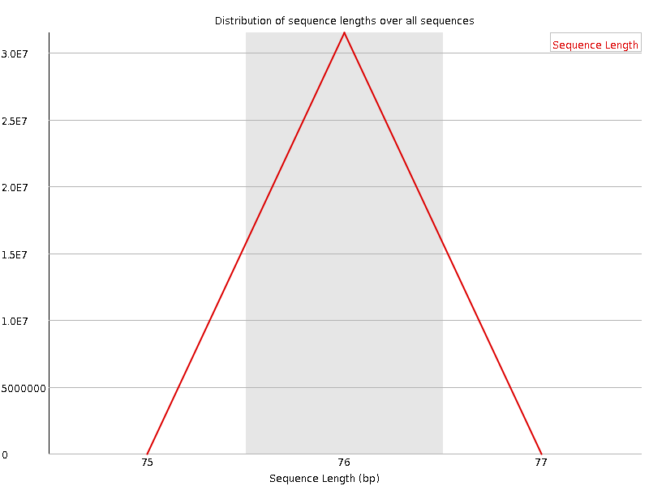
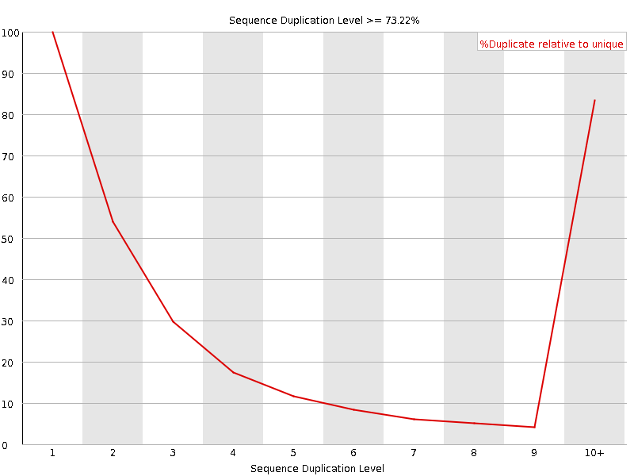
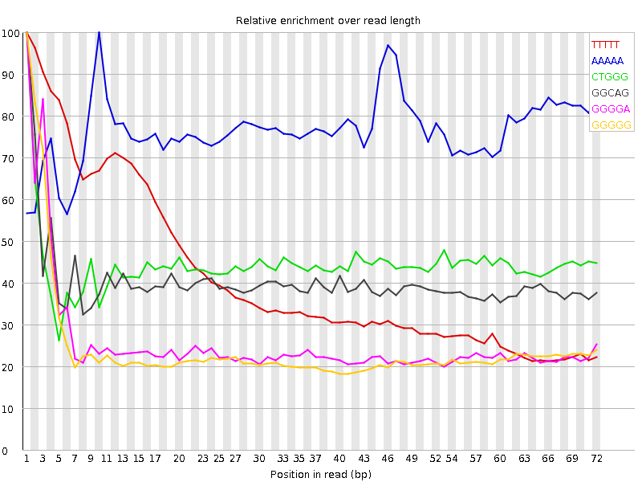

![[OK]](Icons/tick.png) Basic Statistics
Basic Statistics
| Measure | Value |
|---|---|
| Filename | SRR534324_1.fastq |
| File type | Conventional base calls |
| Encoding | Illumina 1.5 |
| Total Sequences | 31478140 |
| Filtered Sequences | 0 |
| Sequence length | 76 |
| %GC | 52 |
Per base sequence quality

Per sequence quality scores

![[FAIL]](Icons/error.png) Per base sequence content
Per base sequence content

Per base GC content

![[WARN]](Icons/warning.png) Per sequence GC content
Per sequence GC content

Per base N content

Sequence Length Distribution

Sequence Duplication Levels

Overrepresented sequences
No overrepresented sequences
Kmer Content

| Sequence | Count | Obs/Exp Overall | Obs/Exp Max | Max Obs/Exp Position |
|---|---|---|---|---|
| TTTTT | 9833410 | 5.580685 | 13.458191 | 1 |
| AAAAA | 5829785 | 3.7572193 | 4.902678 | 10 |
| CTGGG | 6602955 | 2.3190067 | 5.2291474 | 1 |
| GGCAG | 6304955 | 2.2713902 | 5.649274 | 1 |
| GGGGA | 4516955 | 1.4961802 | 5.848385 | 1 |
| GGGGG | 5262220 | 1.4758363 | 6.0628414 | 1 |
| GTGGG | 4173555 | 1.3477151 | 6.332235 | 1 |
| GGGGT | 4049565 | 1.3076767 | 5.1069646 | 1 |
| CGGGG | 3451480 | 1.0528008 | 5.024812 | 1 |